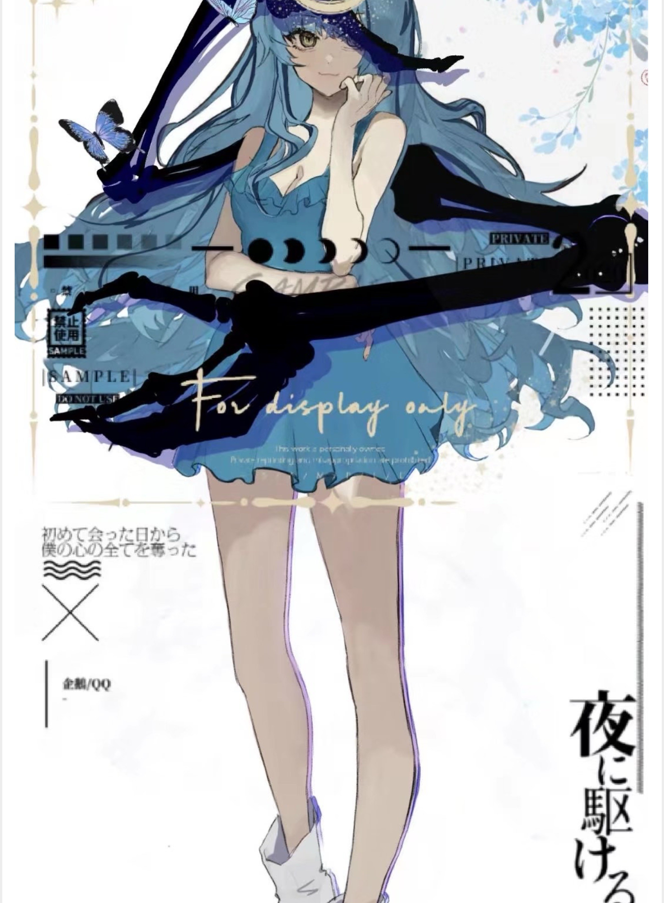

ARCHIVE 00SOLAR SYSTEM / SURVIVING
世界尚未
被梦醒。
黑泥吞没了几乎整个宇宙。太阳系，是幸存者用无数次轮回换来的最后一块有色之地。
06区域档案
16在册角色
03叙事支线
EARTH
DEITY
DEITY

SUBJECT 02蓝色的人知识 / 娱乐 / 地球
SCROLL TO DECODE ↓
01PREMISE
神并非一个天生的种族。
神，是灵魂与
本源的总和。
现实并不由神“管理”，而是在被祂们持续塑造。知识成为海洋，悖论扭曲空间，未知只能诞生于尚未来临的未来。
ORIGIN
≠
POWER
≠
POWER
02 / GEOGRAPHY
仅存的人类，被海分成四座城。
每座城都用自己的方式处理地心渗出的污染。长梦、异能、制度与魔法——没有哪一种答案是无辜的。
03 / SUBJECTS
完整角色档案 →